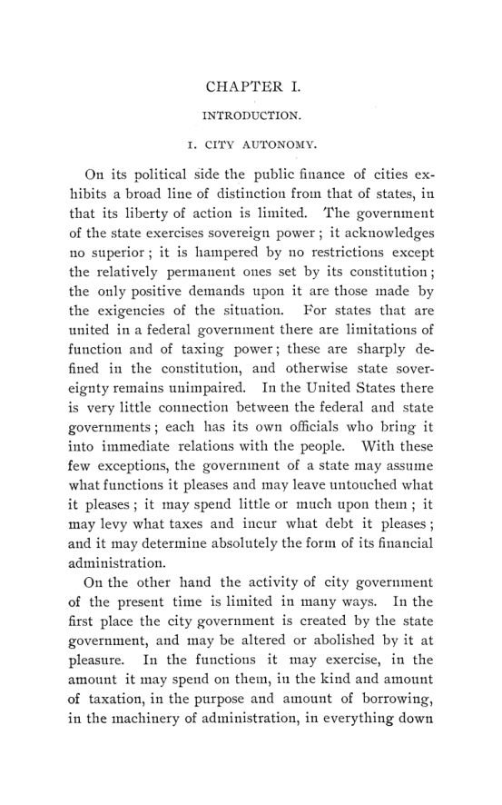

Clow, 1901: como as cidades americanas aprenderam a fazer orçamento
Leitura: 10 min
Em 1901, Frederick R. Clow comparou as finanças de 102 cidades americanas e mostrou como teto de impostos, tutela estadual e déficits crônicos empurraram os municípios para o orçamento moderno.


Filadélfia, 1860. O legislativo da Pensilvânia decide que a cidade terá uma nova prefeitura e aprova uma lei para isso; a guerra adia a obra. Em 1870, outra lei nomeia os membros de uma comissão e, como interpretada pelos tribunais, obriga a cidade a pagar a construção com impostos e empréstimos, apesar de todos os obstáculos que as autoridades locais tentaram opor. Até 1º de julho de 1901, o prédio havia custado US$ 22.581.406 e ainda não estava pronto.
O caso abre o retrato que Frederick R. Clow, Ph.D., traça em A Comparative Study of the Administration of City Finances in the United States with Special Reference to the Budget, publicado em novembro de 1901 como o nº 4 do vol. 2 da terceira série das Publications of the American Economic Association. O estudo nasceu de uma sugestão do professor Charles F. Dunbar, sob cuja direção Clow começou a pesquisa em 1894. Cobre 102 cidades; o autor visitou 23 delas pessoalmente e obteve o resto por documentos e correspondência.
O próprio Clow avisa, no prefácio, que o resultado é incompleto: algumas partes são sumárias, impostos e dívidas aparecem só em esqueleto, e as fontes, sobretudo as obtidas por carta, tornaram a certeza difícil em muitos pontos. Para ele, um estudo comparativo satisfatório teria de esperar estudos exaustivos de cidades individuais, como os já feitos sobre Nova York e Baltimore.
Quanto poder tinha uma cidade americana?
Pouco, segundo Clow. O estado é soberano; a cidade é criada pelo estado e pode ser alterada ou abolida por ele. Os poderes municipais são enumerados em cartas especiais ou leis gerais e interpretados de forma estrita. Clow cita o juiz Dillon: qualquer dúvida razoável sobre a existência de um poder é
“resolvida pelos tribunais contra a corporação, e o poder é negado” (“resolved by the courts against the corporation, and the power is denied”)
Onde as constituições estaduais proibiam leis especiais para cidades, a proibição era contornada dividindo as cidades em classes por população, de modo que cada grande cidade tivesse uma classe só para si. Na Pensilvânia, a classe I incluía apenas Filadélfia. A minúcia das regras impressiona o autor: a lei de consolidação de 1882 fixava para Nova York o número de inspetores, cirurgiões, capitães e sargentos da polícia, além do salário de cada posto.
O caso extremo é Memphis. Em 1879, o legislativo do Tennessee aboliu o governo da cidade para permitir que ela repudiasse a dívida; a área virou um “distrito de tributação” cujos impostos seriam fixados diretamente pela assembleia estadual. O poder de tributar só voltou às autoridades locais depois de um acordo com os credores.
No endividamento, as cidades tinham mais autonomia: o legislativo não podia obrigá-las a contrair dívida para fins locais sem consentimento. Mas quase todas tinham limites. O mais comum era 5% do valor tributável dos imóveis, com variações de 2,5% em Massachusetts a 18% em Richmond.
Por que as cidades fizeram orçamento antes da União?
Clow afirma que as cidades americanas superaram os governos estadual e federal no desenvolvimento do procedimento orçamentário. A razão principal está na receita. Ela vinha sobretudo de um imposto direto sobre o valor dos imóveis; em dois terços das cidades, as cartas fixavam uma alíquota máxima, e metade delas precisava cobrar até o teto. Somada à aversão universal aos impostos, a receita era limitada pela carta, pelo costume ou pelo que o contribuinte tolerasse. Diante das demandas da vida urbana, a cidade tinha de
“cortar o casaco conforme o pano” (“cut the coat according to the cloth”)
e repartir a receita limitada entre os serviços segundo um plano. Dotações feitas ao acaso, como as do governo federal e da maioria dos estados, seriam intoleráveis. A tutela estadual ajudava por outro caminho: quase em toda parte, a lei exigia que o imposto fosse cobrado por finalidade, tanto para escolas, tanto para parques, tanto para a dívida. Aí estão, diz Clow, os elementos de um orçamento.
Que formas tinha o orçamento municipal?
Clow distingue três. A primeira é o simples lançamento do imposto, um orçamento em embrião: em Little Rock, as alíquotas eram as máximas permitidas, e a repartição do dinheiro entre departamentos era feita pelo conselho ao aprovar contratos e contas mês a mês. A segunda é o lançamento precedido de estimativas detalhadas sem força legal. A terceira, o orçamento plenamente desenvolvido, como o de Boston, fixa dotações anuais junto com o imposto.
Na segunda forma, o conselho fica apenas moralmente obrigado a seguir as estimativas. Clow observa que essa obrigação está sujeita a todo uso e abuso: pode permitir economia ou melhor serviço, mas também que um grupo no controle distribua bem os recursos na época em que o orçamento atrai atenção pública e depois os desvie para outros fins.
Quem fazia o orçamento, o executivo ou o conselho?
As estimativas dos departamentos, diz Clow, pedem quase sempre mais do que a cidade pode pagar, e alguém tem de fazer a tarefa ingrata de cortá-las. O trabalho exige tantos detalhes e contas que só pode ser feito por uma pessoa, ou por duas ou três. Depois de pronto, aumentar um item exige subir o imposto ou cortar outro, e cada mudança encontra resistência. O autor recebeu repetidos depoimentos de que o controller ou o prefeito, ao revisar as estimativas, fazia de fato o orçamento.
O modelo mais conhecido foi a junta de estimativa e repartição de Nova York, formada por altos funcionários executivos ex officio, com o prefeito e o controller entre eles. O conselho podia propor mudanças, mas a junta podia derrubá-las, e por isso o conselho raramente as fazia. A ideia foi imitada em Baltimore e, com menos poderes, em New Haven, Detroit, Minneapolis e outras cidades.
As previsões de receita acertavam?
Pouco. Nas estimativas, escreve Clow, as cidades estavam na mesma condição caótica do governo federal. A despesa pode ser obrigada a caber na dotação; a receita, não. É da superestimativa das receitas que os déficits mais surgem. Em Buffalo, a carta mandava distribuir o imposto pelos imóveis, e nada indica que a cidade não contasse com cada dólar lançado; o resultado era uma dívida flutuante alimentada por um déficit anual; o controller informou que ela somava cerca de US$ 80 mil em sete anos.
Como corrigir um orçamento que não previu tudo?
Clow lista os imprevistos: um carro de bombeiros perdido num incêndio, uma tempestade de neve que só vem uma vez por década, chuvas, enchentes, epidemias, motins, sentenças judiciais. Algumas cidades revisavam o orçamento de forma regular: Atlanta em junho e outubro, Cleveland três vezes ao ano. O autor desconfia do arranjo, porque uma revisão esperada por todos tornaria menos visível quem estourou a dotação. Sua regra:
“Tudo o que diminui a importância do orçamento original é um mal” (“Anything that lessens the importance of the original budget is an evil”)
Os meios mais usados eram o saque a descoberto, frequente embora ilegal em várias cidades, e a transferência entre dotações, proibida como regra geral em Nova York, Wisconsin e Iowa. Boston a permitia por recomendação escrita do prefeito aprovada por dois terços do conselho.
Para onde ia a administração financeira das cidades?
No resumo final, Clow descreve uma trajetória. Até cerca de trinta anos antes, comissões do conselho dirigiam o trabalho até os menores detalhes. Desde então, as maiores cidades restringiram o conselho ao trabalho legislativo e entregaram a administração aos executivos, que preparam o orçamento e o submetem à aprovação. No começo, o único orçamento era o imposto sobre a propriedade; agora é uma previsão oficial de todas as receitas e sua destinação em somas específicas. O controller ganhou importância; o tesoureiro, relativamente, perdeu.
Na minha leitura
Na minha leitura, o método comparativo é o que dá peso ao estudo. Em vez de descrever o modelo ideal, Clow reúne o que 102 cidades efetivamente faziam e deixa ver um mecanismo econômico: a restrição orçamentária rígida veio antes da técnica orçamentária. Onde a alíquota tinha teto e o contribuinte resistia, a cidade precisou escolher entre serviços; onde o governo podia simplesmente gastar, como a União, as dotações ficavam dispersas. O orçamento aparece aqui como consequência da escassez de receita, não de uma doutrina administrativa.
O livro também isola uma assimetria que continua no centro da gestão fiscal: a despesa obedece a uma ordem, a receita não. Os remédios que ele registra, o desconto de 20% de Allegheny, a margem de Nova York, o limite de 95% de Louisville, são versões primitivas de regras de prudência para estimar receita. E a regra de Troy, em que o legislativo pode cortar mas não aumentar, mostra a escolha institucional de concentrar a iniciativa em quem conhece os números e dar ao conselho o poder de veto, não o de expansão.
Glossário
- Controller (comptroller)
- principal funcionário contábil da cidade, que audita contas e prepara grande parte do orçamento.
- Lançamento do imposto (tax-levy)
- ato que fixa as alíquotas ou as somas a cobrar do imposto sobre a propriedade no ano.
- Dotação
- autorização legal para gastar uma soma específica numa finalidade específica.
- Carta municipal (charter)
- lei estadual que organiza o governo de uma cidade e enumera seus poderes.
- Regra de Dillon
- princípio judicial de que a cidade só tem os poderes expressamente concedidos pelo estado.
- Ex officio
- membro de um órgão em razão do cargo que ocupa, não por eleição ou nomeação específica.
- Dívida flutuante
- dívida de curto prazo acumulada para cobrir déficits correntes.
- Saque a descoberto
- gasto acima da dotação aprovada, coberto depois.
Fontes
- A Comparative Study of the Administration of City Finances in the United States with Special Reference to the Budget (pp. 7–148). JSTOR · Internet Archive (PDF)
- Sumário da edição no JSTOR: Publications of the American Economic Association, 3ª série, vol. 2, nº 4.
Documento em domínio público (EUA, publicado antes de 1931), via JSTOR Early Journal Content e Internet Archive. Resumo e comentário do autor deste site, sem afiliação com a American Economic Association. Encontrou um erro? Escreva: a correção é publicada no próprio texto, com data.
← Nº 59 · Sewall, 1901: do preço justo ao valor subjetivo, antes de Adam Smith Nº 61 · Washington, 1901: liberdade industrial, comércio e tarifa protetora →